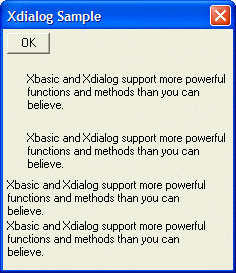

{REGION_XMARGIN}
Syntax
{REGION_XMARGIN= Width }
|
Argument |
Type |
Description |
|
Width |
N |
The width of the left margin for the following region(s). |
Description
The {REGION_XMARGIN} command sets the left margin for the following region(s).
Limitations
Desktop applications only
Example
|
ui_dlg_box("Xdialog Sample", <<%dlg% <*OK> ; {region_xmargin=2}; {region_ymargin=.5}; {wrap=40} {region1} {'Xbasic and Xdialog support more powerful functions and methods than you can believe.} {endregion1}; {region2} {'Xbasic and Xdialog support more powerful functions and methods than you can believe.} {endregion2}; {region_xmargin=} {region_ymargin=} {region3} {'Xbasic and Xdialog support more powerful functions and methods than you can believe.} {endregion3}; {region4} {'Xbasic and Xdialog support more powerful functions and methods than you can believe.} {endregion4}; %dlg%) |

See Also
Xdialog Commands, {REGION_YMARGIN}